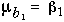
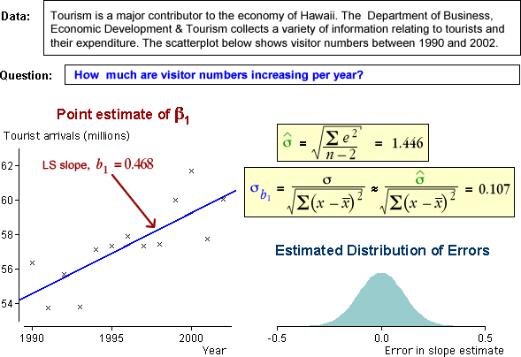

How accurate is the least squares estimate of the slope?
In the previous page, we explained that the least squares slope has a normal distribution with mean

When b1 is used as an estimate of β1, there is therefore an error that has a normal distribution centred on zero,
error in estimate of β1 = (b1 − β1) ~ normal ( 0, σb1 )
The standard deviation of this distribution describes the likely size of the estimation error.
It can be shown mathematically that...

where sx is the standard deviation of the explanatory variable, X.
This formula is not important enough to warrant remembering, but we will use it later to explain some properties of the estimate.
Since σ is unknown, the above formulae for the standard deviation of b1 cannot be evaluated. However we can approximate it by replacing σ with an estimate from the data,

Examples
For each data set below, the least squares estimate of the slope is shown. The distribution of the error in this estimate, (b1 - β1) is evaluated on the right.

The normal distribution in the bottom right describes how far the least squares estimate is likely to be from β1.